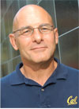
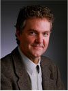
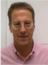
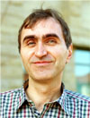
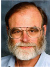
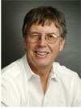
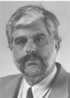
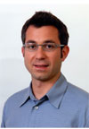

SIGMOD Keynote Talk 1: The RADical Approach to Next-Generation Information Services: Reliable, Adaptive, Distributed
David Patterson, University of California, Berkeley
Tuesday, 9:00 - 10:00
Location: Grand Ballroom 1-3
The ultimate goal of RAD (Reliable, Adaptive, and Distributed) systems is to create the technologies that would enable a single person to develop, assess, deploy, and operate a revolutionary IT service. If successful, we can imagine enabling a "Fortune 1 million" of new Internet service developers. Rather than the traditional waterfall model of systems development, where different groups are responsible for each of the phases of developing and operating a new service, the designers and developers of Internet services often have operational responsibility for those services. The RAD approach relies on two complementary elements: 1. Apply statistical machine learning (SML) to improve our understanding of developed artifacts and to streamline their deployment and operation. 2. Extend and sometimes redesign aspects of the underlying Internet communication model. This will enable services to build upon a base that is far more flexible and secure than today's system. Since we are in the early phases, this talk focuses on early results. These include tying visualization to SML to increase operators' confidence in automated diagnosis and in the use of Field Programmable Gate Arrays to emulate data centers and to generate Internet workloads. The project is being done (naturally enough) in the new RAD Lab at UC Berkeley. The project is a multidisciplinary lab with 6 PIs (Armando Fox, Michael Jordan, Randy Katz, David Patterson, Scott Shenker, and Ion Stoica) and dozens of grad students. Funded primarily from industry, foundation members of the RAD Lab are Google, Microsoft, and Sun Microsystems, and affliliate members include HP, IBM, Nortel, NTT, and Oracle. The talk will touch on funding models as well as the technical vision.

David Patterson joined the faculty at the University of California at Berkeley in 1977, where he now holds the Pardee Chair of Computer Science. He led the design and implementation of RISC I, likely the first VLSI Reduced Instruction Set Computer. This research became the foundation of the SPARC architecture, used by Sun Microsystems and others. He was a leader, along with Randy Katz, of the Redundant Arrays of Inexpensive Disks project (or RAID), which led to reliable storage systems from many companies. He is co-author of five books, including two with John Hennessy, who is now President of Stanford University. Past chair of the Computer Science Department at U.C. Berkeley and the Computing Research Association, he was elected President of the Association for Computing Machinery (ACM) and served on the Information Technology Advisory Committee for the U.S. President.His teaching has been honored by the ACM, the IEEE, and the University of California. He is a member of the National Academy of Engineering and is a fellow of both the ACM and the IEEE. Patterson shared SIGMOD's 1998 Test of Time Award and the 1999 IEEE Reynold Johnson Information Storage Award with Garth Gibson and Randy Katz for RAID, and he shared the 2000 IEEE von Neumann medal and the 2005 C&C Prize with John Hennessy. Since then he was elected to the Silicon Valley Engineering Hall of Fame, the American Academy of Arts and Sciences, and the National Academy of Sciences, and he just received the Distinguished Service Award from the Computing Research Association on June 26, 2006.
SIGMOD Keynote Talk 2: Reconstructing 100 Million Years of Our Genome's Evolutionary History
David Haussler, Howard Hughes Medical Institute, UC Santa Cruz
Thursday, 8:30 - 9:30
Location: Grand Ballroom 1-3
Comparison of the human genome with the genomes of other species reveals that at least 5% of the human genome is under negative selection. In fact, the most conserved segments of the human genome do not appear to code for protein. These "ultraconserved" elements are totally unchanged between human mouse and rat, although the function of most is currently unknown. In contrast with the slowly changing ultraconserved regions, in other areas of the genome recent genetic innovations that are specific to primates or specific to humans have caused relatively rapid bursts of localized changes, possibly through positive selection. We are currently working on a full genome reconstruction for the common ancestor of all placental mammals and we should eventually be able to document most of the genomic changes that occurred in the evolution of the human lineage from the placental ancestor over the last 100 million years, including innovations that arose by positive selection. Currently we provide a large database and "genome browser" for the human genome and its evolution at http://genome.ucsc.edu. We get about 6000 users per day, and about one million page requests per week. See http://genome.ucsc.edu/goldenPath/pubs.html for references.

David Haussler is an Investigator with the Howard Hughes Medical Institute and professor of Biomolecular Engineering at UC Santa Cruz, where he directs the Center for Biomolecular Science & Engineering and is scientific co-director for the California Institute for Quantitative Biomedical Research. Haussler's research lies at the interface of mathematics, computer science, and molecular biology. He develops new statistical and algorithmic methods to explore the molecular evolution of the human genome, integrating cross-species comparative and high-throughput genomics data to study gene structure, function, and regulation. His findings have shed light on the possible functionality of what was once considered to be "junk" DNA. He has recently begun to computationally reconstruct the genome of the ancestor common to placental mammals.As a collaborator on the international Human Genome Project, his team posted the first publicly available computational assembly of the human genome sequence on the internet. This has evolved into a web browser for the genome (http://genome.ucsc.edu) that is used extensively in biomedical research. Haussler received his PhD in computer science from the University of Colorado at Boulder. He is a fellow of the NAS, the American Academy of Arts and Sciences, AAAS, and AAAI. He has won a number of prestigious awards, most recently the 2006 Dickson Prize for Science from Carnegie Mellon University.
SIGMOD Invited Talks: Systems Perspectives on Database Technology - Achievements and Dreams Forgotten
Tuesday, 15:30 - 17:30
Location: Grand Ballroom 1-3
Query Processing and Optimization
David DeWitt, University of Wisconsin at Madison
Over the last 30 years, the database research community has made numerous contributions in the areas of algorithms for query processing and optimization. Commercial products have improved from barely being able to process tables with only 10s of thousands of rows to easily handling tables with billions of rows while at the same time offering ever-increasing functionality. This talk will examine the key contributions along the way and give one person's view of the challenges facing database engines in the future.

David J. DeWitt joined the Computer Sciences Department at the University of Wisconsin in September 1976 after receiving his Ph.D. degree from the University of Michigan. He served as department chair for five years from July 1999 to July 2004 and is currently the John P. Morgridge Professor of Computer Sciences. In 1995 Professor DeWitt was selected to be an ACM Fellow. He also received the 1995 SIGMOD Innovation Award for his contributions to the database systems field. He was elected to the National Academy of Engineering in 1998. His research program has focused on the design and implementation of database management systems including parallel, object-oriented, and object-relational database systems. In the late 1980s the Gamma parallel database system project produced many of key pieces of technology that form the basis for today's generation of large parallel database systems including products from IBM, Informix NCR/Teradata, and Oracle. Throughout his career he has also been interested in database system performance evaluation. He developed the first relational database system benchmark in the early 1980s, which became known as the Wisconsin benchmark. More recently, his research program has focused on the design and implementation of distributed database techniques for executing complex queries against the content of the Internet.Information Integration: Past, Present and Future
Hector Garcia-Molina, Stanford University
In this talk, I will discuss the problem of integrating data from diverse sources. I will argue that the integration problem continues to be one of the most critical in our field, but also one of the most vexing. I will examine the accomplishments of the past 30 years, and will summarize the fundamental challenges that still remain.

Hector Garcia-Molina is the Leonard Bosack and Sandra Lerner Professor in the Departments of Computer Science and Electrical Engineering at Stanford University, Stanford, California. He was the chairman of the Computer Science Department from January 2001 to December 2004. From 1997 to 2001 he was a member of the President's Information Technology Advisory Committee (PITAC). From 1979 to 1991 he was on the faculty of the Computer Science Department at Princeton University, Princeton, New Jersey. His research interests include distributed computing systems, digital libraries and database systems. He received a BS in electrical engineering from the Instituto Tecnologico de Monterrey, Mexico, in 1974. From Stanford University a PhD in computer science in 1979. Garcia-Molina is a Fellow of the Association for Computing Machinery and of the American Academy of Arts and Sciences; is a member of the National Academy of Engineering; received the 1999 ACM SIGMOD Innovations Award; is on the Technical Advisory Board of DoCoMo Labs USA, Yahoo Search & Marketplace; is a Venture Advisor for Diamondhead Ventures, and is a member of the Board of Directors of Oracle and Kintera.Database Operating Systems: Storage & Transactions
Jim Gray, Microsoft Corporation
Databases systems now use most of the technologies the research community developed over the last 3 decades: Self-organizing data, non-procedural query processors, automatic-parallelism, transactional storage and execution, self-tuning, and self-healing. After a period of linear evolution, database concepts and systems are undergoing rapid evolution and mutation- entering a synthesis with programming languages, with file systems, with networking, and with sensor networks. Files are being unified with other types and becoming first-class objects. The transaction model appears to be fundamental to the transactional memory needed to program multi-core systems in parallel. Workflow systems are now a reality. The long-heralded parallel database machine idea of data-flow programming has begun to bear fruit. Each of these new applications of our ideas raises new and challenging research questions.

Jim Gray is part of Microsoft's research group where his work focuses on eScience: using computers analyze scientific data and on the related topics of databases and transaction processing. Jim is active in the research community, is an ACM, NAE, NAS, and AAAS Fellow, and received the ACM Turing Award for his work on transaction processing. He edits of a series of books on data management, and has been active in building online databases like http://TerraService.net and http://skyserver.sdss.org.Objects and Data Bases
Michael Stonebraker, Massachusetts Institute of Technology
This talk will examine the history of objects in data bases. Specifically, it will examine why object-oriented data bases failed, what was good and bad about POSTGRES objects and why it took so long for that technology to get accepted. I will also examine the lessons that should be learned from these efforts, as well as the failed IBM Project Eagle (to support relations on top of IMS). I will then take out my crystal ball and look out into the future. I see the "one size fits all" relational DBMSs being augmented by several vertical market-specific DBMSs. This will lead to a proliferation of object models and implementations, some with special features (such as ones oriented toward scientific data). Not only will this reinvigorate DBMS implementation techniques, but also it will lead to really daunting data integration problems. Because of this and other factors like SOA, data integration is likely to become a bigger "achilles heel" then it is now, and one for which our solutions are woefully inadequate.

Dr. Stonebraker has been a pioneer of data base research and technology for more than a quarter of a century. He was the main architect of the INGRES relational DBMS, and the object-relational DBMS, POSTGRES. These prototypes were developed at the University of California at Berkeley where Stonebraker was a Professor of Computer Science for twenty five years. More recently at M.I.T. he was a co-architect of the Aurora/Borealis stream processing engine as well as the C-Store column-oriented DBMS. He is the founder of four venture-capital backed startups, which commercialized these prototypes. Presently he serves as Chief Technology Officer of StreamBase Systems, Inc., which is commercializing Aurora/Borealis and Vertica, which is commercializing C-Store.Professor Stonebraker is the author of scores of research papers on data base technology, operating systems and the architecture of system software services. He was awarded the ACM System Software Award in 1992, for his work on INGRES. Additionally, he was awarded the first annual Innovation award by the ACM SIGMOD special interest group in 1994, and was elected to the National Academy of Engineering in 1997. He was awarded the IEEE John Von Neumann award in 2005, and is presently an Adjunct Professor of Computer Science at M.I.T., where he is working on a variety of future-generation data-oriented projects.
SIGMOD Invited Talks: Award Winners
Wednesday, 8:30-10:15
Location: Grand Ballroom 1-3
The Interoperability of Theory and Practice
Tedd E. Codd Innovation Award Winner
Jeffrey D. Ullman, Gradiance Corporation
The speaker will try to sort out the ways in which theory does or should inform practice and the ways in which practice does or should inform theory. Some new directions for both theory and practice will be proposed. These applications have a common theme of public protection, ranging from spam or phishing, to software flaws, to detection of terrorist activity.

Jeff Ullman is the Stanford W. Ascherman Professor of Engineering (Emeritus) in the Department of Computer Science at Stanford and CEO of Gradiance Corp., a startup trying to produce low-cost, high-quality tools for secondary and college education.He received the B.S. degree from Columbia University in 1963 and the PhD from Princeton in 1966. Prior to his appointment at Stanford in 1979, he was a member of the technical staff of Bell Laboratories from 1966-1969, and on the faculty of Princeton University between 1969 and 1979. From 1990-1994, he was chair of the Stanford Computer Science Department. He has served as chair of the CS-GRE Examination board, Member of the ACM Council, Chair of the New York State CS Doctoral Evaluation Board, on several NSF advisory boards, and is past or present editor of several journals.
Ullman was elected to the National Academy of Engineering in 1989 and has held Guggenheim and Einstein Fellowships. He is the 1996 winner of the SIGMOD Contributions Award, the 1998 winner of the Karl V. Karlstrom Outstanding Educator Award, and the 2000 winner of the Knuth Prize. He is the author of 16 books, including widely read books on database systems, compilers, automata theory, and algorithms.
Managing Confidentiality for Exchanged Data
Dissertation Award Winner
Gerome Miklau, University of Massachusetts, Amherst
Maturing technologies for data exchange and integration promise easy access to information, flexible collaboration, and convenience. But they also pose an increasing threat that data about us, or data owned by us, will be inappropriately disclosed and misused. In this talk I will discuss two problems concerned with protecting the confidentiality of exchanged data.
In many settings, sensitive data is protected by restricting access to the data as a whole and permitting access only to a logical view of the data, defined in a given query language. First, I will describe a novel definition of security which holds when the available view contains no information that can be used to answer a sensitive query. This standard of security assists data owners in making accurate decisions about the data that can safely be published. Second, I will describe techniques for controlling access to published views using cryptography. The latter techniques are the basis of a practical framework that can be used to safely and efficiently disseminate data to a large numbers of recipients, and can easily support a wide range of access conditions.

Gerome Miklau is an Assistant Professor at the University of Massachusetts, Amherst. He received his Ph.D. in Computer Science from the University of Washington in 2005. He earned Bachelor's degrees in Mathematics and in Rhetoric from the University of California, Berkeley, in 1995. His primary research interest is secure data management: providing privacy, confidentiality, and integrity guarantees for data in relational databases and data exchanged on the World Wide Web. He is also interested in database theory, semi-structured data, and societal issues of personal privacy.The Story of BIRCH: How It Started and What Happened Afterwards
Test of Time Award Winners
Tian Zhang (IBM), Raghu Ramakrishnan (University of Wisconsin at Madison), and Miron
Livny (University of Wisconsin at Madison)
First we would like to take this opportunity to thank ACM-SIGMOD as well as many people and/or projects that are relevant to BIRCH. Then we would like to share with you the story of BIRCH: how it started and what happened afterwards. BIRCH started by taking the essence of the data distribution summarization from statistics, the incremental and heuristic learning concept from machine learning, and the index re-balancing technologies from database to define the clustering feature (CF) and the CF-tree, and then created a data clustering algorithm that is very unique in 2 ways: 1) extremely scalable with large amount of data given a limited amount of resources (CPU and memory); and 2) rarely stuck with a local optimal solution no matter what order the data is scanned. It has sparked major research interests in data clustering area from database community, and as a result, many great papers have been generated over the past 10 years that 1) overcame some of BIRCH's limitations; 2) extended BIRCH to new domains and applications; and 3) generalized the clustering features and frameworks. Last, but not the least, many of the resulting work have penetrated into commercial data analysis products as well.
Squaring the Cube: Connecting Data Cubes and Relations
Test of Time Award Winners
Venky Harinarayan (Kosmix), Anand Rajaraman (Kosmix), and Jeffrey Ullman (Stanford University)
Looking back at our 1996 paper, Implementing Data Cubes Efficiently, we describe the motivation behind it and its impact on research and industry. In 1996, the business side of online analytic processing (OLAP) had competing software companies preaching the superiority of fully materialized (MOLAP) and unmaterialized cubes (ROLAP) respectively. On the research side, Gray et al had just introduced the Data Cube operator. Our paper's contribution was a mathematical framework to think about the OLAP problem: a benefit function, optimizing areas of the cube to pre-aggregate based on the function, and demonstrating that a greedy algorithm will yield close to optimal solution. Most OLAP today companies follow the hybrid approach suggested by our model, and partially compute the cube. For example, a leading vendor has gone from being limited to 6 dimensional cubes in 1995 to computing 50 dimensional cubes today. The improved capabilities of OLAP engines in turn have turned them into platforms for a new class of enterprise-wide analytical applications, just as online transaction processing (OLTP) engines form the platforms for many enterprise applications.